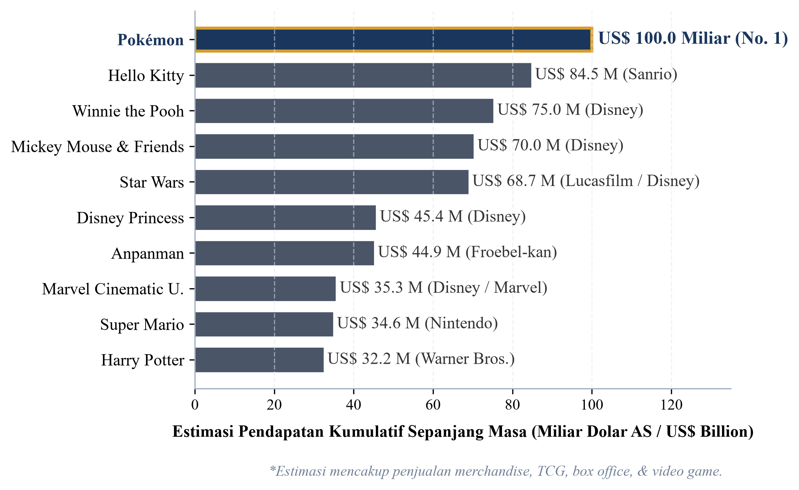

UNIVERSITAS KRISTEN KRIDA WACANA
Fakultas Ekonomi dan Bisnis • Program Studi S1 Manajemen Keuangan
PENGARUH HEDONIC MOTIVATION, DESIRE FOR COMPLETENESS, DAN SPECULATIVE MOTIVE TERHADAP IMPULSIVE BUYING BOOSTER PACK KARTU POKÉMON TCG DENGAN SELF-CONTROL SEBAGAI VARIABEL MODERASI
Kajian Ekonometrika Keuangan Perilaku (Behavioral Finance) pada Pasar Komoditas Alternatif & Kolektibel di Indonesia

Ledakan Pasar Pokémon TCG & Masalah Pembelian Impulsif



Kartu fisik resmi berbahasa Indonesia dipasarkan langsung di etalase kasir minimarket modern (Indomaret, Alfamart) tanpa hambatan impor sejak 2019.
Format kemasan bersegel acak memicu sensasi letupan dopamin dan near-miss effect saat disobek, melumpuhkan pertimbangan kognitif seketika.
Peluang memperoleh kartu langka (Special Illustration Rare / SAR) bernilai jutaan rupiah di pasar sekunder memicu spekulasi agresif.
Kesenjangan Temuan Empiris & Kebaruan Riset

Pranggabayu & Andjarwati (2022) mencatat pengaruh positif kuat, namun Apidana & Kholifah (2022) membuktikan kontrol diri gagal memoderasi dorongan hedonis (p = 0,597).
Barasz et al. (2017) & Gao et al. (2014) menguji pseudo-set framing di lab, namun belum pernah diverifikasi empiris pada kartu fisik bernomor seri master set di Indonesia.
Aryadi & Lingga (2024) menemukan motif investasi kartu bernilai signifikan, sedangkan Colline (2024) mendokumentasikan kuatnya bias herding dan loss aversion pada investor Indonesia.

Disparitas Nilai Arbitrase (2,0× – 26,0×)
Data PriceCharting membuktikan sertifikasi PSA 10 Gem Mint melipatgandakan harga kartu mentah, memicu FOMO spekulatif kolektor kasir.
✨ 3 Kebaruan Penelitian (Novelty)
Model Moderated Regression Analysis (MRA) & 6 Hipotesis

Desain Sampling, Pengujian Kualitas, & Analisis MRA

Pengayaan Literatur Behavioral Finance
Memperluas penerapan teori keuangan perilaku pada komoditas hobi fisik bernilai pasar sekunder nyata di Indonesia, serta membuktikan peran Self-Control sebagai rem kognitif volisional peredam bias kelengkapan koleksi dan spekulasi arbitrase.
Edukasi Literasi & Proteksi Finansial
Menjadi pedoman kesadaran finansial bagi komunitas kolektor generasi muda agar terhindar dari jebakan pengeluaran impulsif tanpa anggaran akibat euforia perburuan kartu langka (SAR / PSA 10) di etalase kasir ritel modern.
"Sekian Presentasi Usulan Proposal Skripsi"
Terima Kasih atas Bimbingan Ibu Dr. Fredella Colline dan Perhatian Bapak/Ibu Dewan Penguji